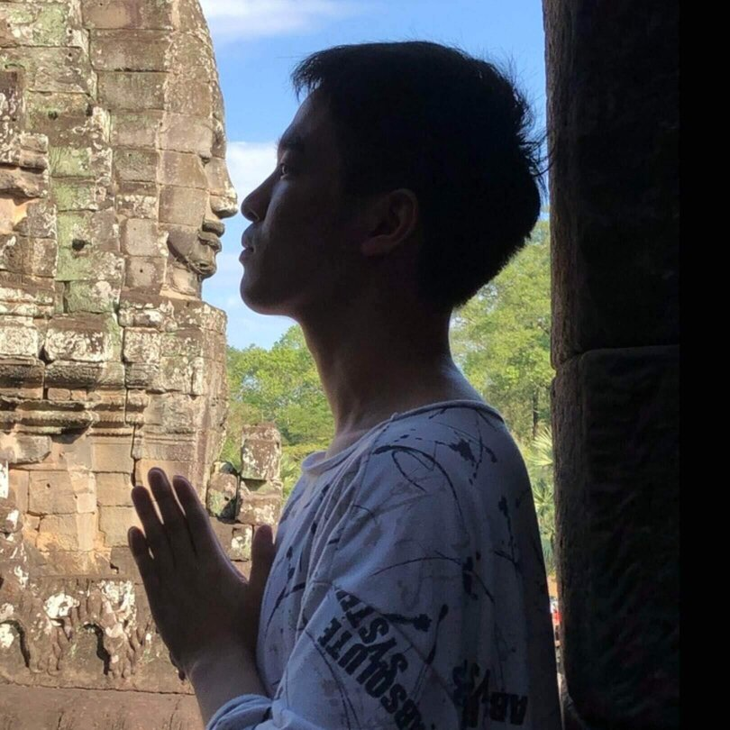
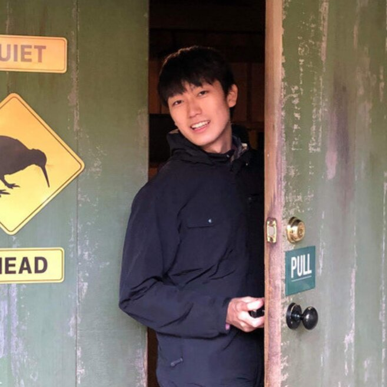
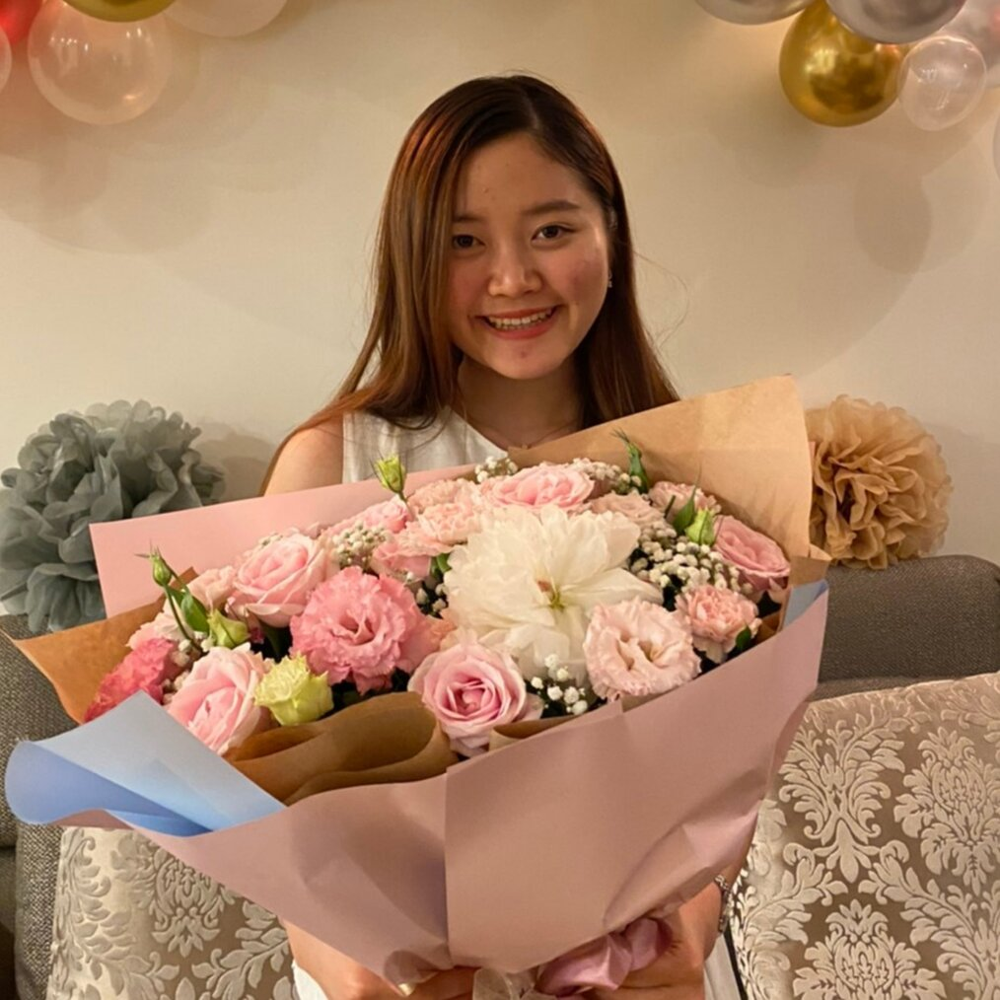

NUS | NiSC
Nihon Student Club
はじめまして、
シンガポール国立大学 日本人学生会 NiSC です。
2021年5月に結成して以来、
NUSに通う日本人学生のコミュニティ形成を目標に活動しています。
他にも記事やSNSを通してNUSの魅力を幅広く発信したり、
NUSの現地の学生との交流活動を行っています。
NUSやシンガポール留学に興味がありましたら、ぜひこのサイトを活用して下さい。

海外留学は、英米だけじゃない。
シンガポール国立大学は、アジアで一位、世界でを誇る、世界的に認められた教育機関です。世界各国から優秀な学生が集います。
シンガポールは駐在で来ている日本人も多く、同じアジア系の国でもあるため、生活環境は世界トップクラス。
加えて、日本よりも安全と言って良いほどの治安の良さも魅力です。
パンデミックの影響もあり、欧米諸国への留学をためらう学生も多い今、
私たちは海外留学に興味のある学生に「東南アジアでの留学」という新しい可能性を提示したいと考えています。

現役大学生による情報提供
シンガポールでの留学・交換留学に興味があっても、
日本人学生が少ない故に情報収集が難しいのが現状です。
ここでは、NiSCのメンバーの思う「入学前に知りたかったこと」を記事にしています。
受験方法や、NUSでの授業、学生生活など気になる方は、ぜひ私たちの記事ページをご覧ください。
個性溢れるNiSCのメンバーは、専攻も海外経験も趣味も様々です。
詳しくは私たち一人一人のプロフィールをご覧下さい。

沖本 祥
Sho Okimoto
経済学部４年

福島 雄一郎
Yuichiro Fukushima
情報学部３年

加藤 陽
Yoh Kato
工学部３年
地主 一紀
Ikki Chinushi
プロジェクト管理学部２年
南 佑弥
Yuya Minami
ビジネス２年

高橋 志英
Yukihide Takahashi
工学部２年

三ツ井 愛弓
Ayumi Mitsui
ビジネス１年
NiSCのウェブサイトをご覧頂き、
ありがとうございます。
お問い合わせは下記メールアドレス、
あるいはInstagram (@nus.nisc)のDMにて承っております。
NUS関連の質問に限らず、シンガポールでの学生生活や、
海外大学の受験についてのお問い合わせも大歓迎です。
nus.nisc@gmail.com

Instagram
公式インスタグラムもご覧下さい。